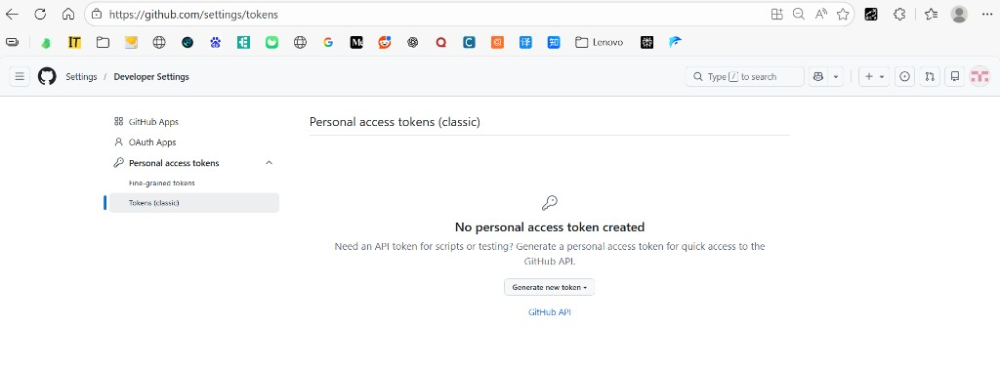
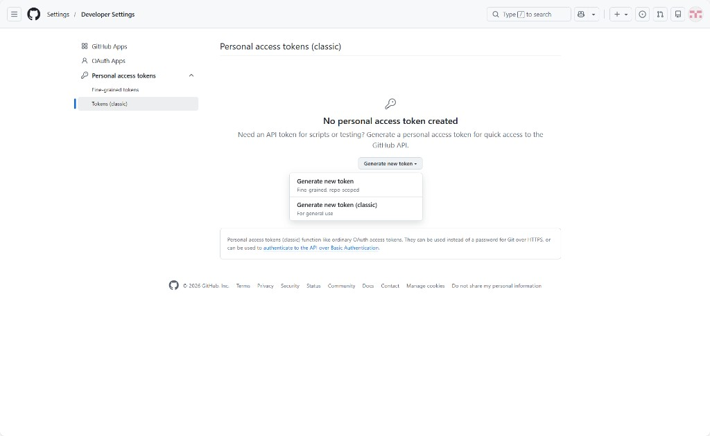
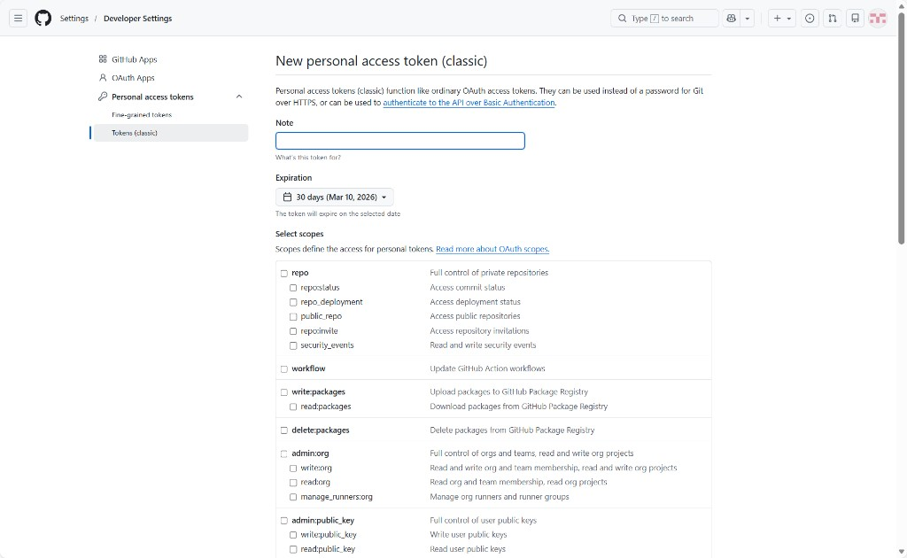
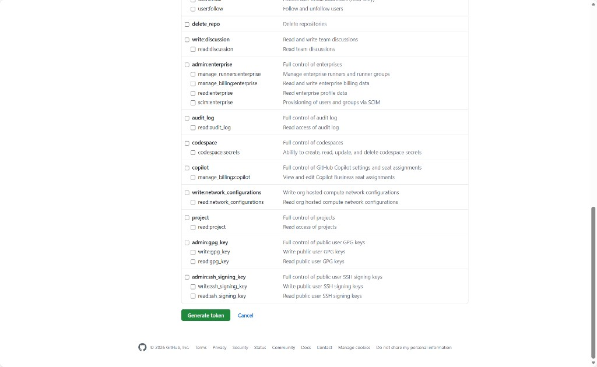
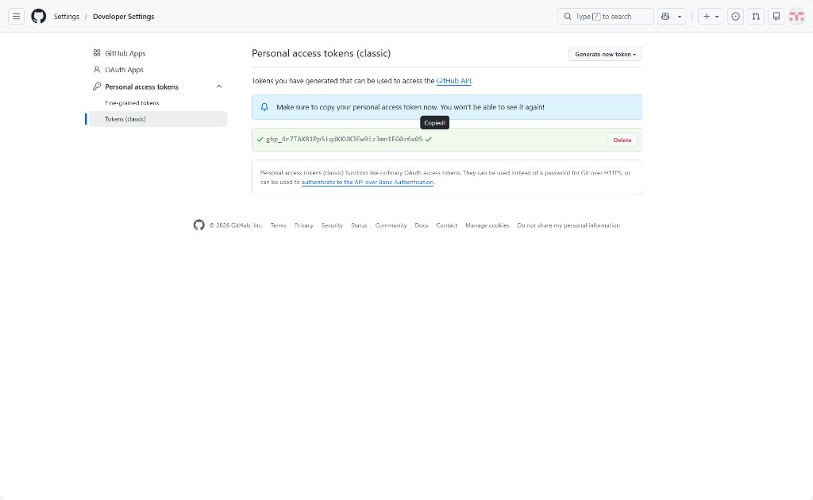

GitHub Token 申请教程
为 GitHub Issue 语义搜索工具配置 Personal Access Token，提升 API 配额 —
全程 5 步，约 2 分钟完成
Step 1
打开 GitHub Token 设置页面
在浏览器中访问：
https://github.com/settings/tokens
如果尚未登录 GitHub，会跳转到登录页面，请先完成登录。
登录后你会看到 Personal access tokens 页面。在左侧栏中，点击
Personal access tokens 展开子菜单，然后选择 Tokens (classic)。

Personal access tokens (classic) 页面 — 左侧选中 Tokens (classic)
↓
Step 2
创建新的 Classic Token
点击页面中间的 "Generate new token" 下拉按钮，选择
"Generate new token (classic)"。

下拉菜单中选择 "Generate new token (classic)" — 注意不要选 fine-grained
GitHub 会要求你重新输入密码以确认身份（sudo 模式）。输入密码后点击 Confirm。
↓
Step 3
填写 Token 配置
进入配置页面后，按以下方式填写：
-
Note（备注）：填写一个描述性名称，例如：
GitHub Issue Search Tool
-
Expiration（过期时间）：建议选择
90 days 或
No expiration。默认的 30 天太短，需要频繁续期。
-
Select scopes（权限范围）：不要勾选任何复选框！
所有 scope 保持为空。
为什么不需要任何权限？
我们的工具只需要搜索和读取公开仓库的 issue。不勾选任何权限的 token 已经足够
将 API 配额从「匿名」级别提升到「认证用户」级别。这是最小权限原则 — 不要授予不需要的权限。

刚进入的配置页面 — Note 和 Expiration 需要填写，Scopes 全部为空
填写完成后的效果：

填写完成 — Note 已填写，Expiration 设为 No expiration，所有 Scopes 未勾选
注意 GitHub 的安全提醒
选择 "No expiration" 后，GitHub 会显示黄色警告建议设置过期时间。对于仅用于搜索公开 issue 的零权限 token，
这个风险是可接受的。如果你更在意安全性，可以选择 90 天并在到期后重新生成。
↓
Step 4
生成并复制 Token
向下滚动页面，确认所有 scope 复选框都未勾选，然后点击底部绿色的 "Generate token" 按钮。

所有权限都未勾选，点击绿色 "Generate token" 按钮
生成成功后，页面会显示你的 token（以 ghp_ 开头的字符串）。
Token 只会显示一次！
离开这个页面后，你将无法再看到完整的 token。请立即点击 token 旁边的复制图标，
将其保存到安全的地方（如密码管理器）。

Token 已生成 — 点击复制图标保存到剪贴板（token 已打码处理）
↓
Step 5
配置环境变量
将 token 设置为环境变量，让搜索工具能够自动使用它。
临时设置（当前终端会话有效）
Windows PowerShell：
$env:GITHUB_TOKEN = 'ghp_你的token'
Linux / macOS：
export GITHUB_TOKEN=ghp_你的token
永久设置（推荐）
Windows — 添加到 PowerShell 配置文件：
# 打开配置文件（如果不存在会自动创建）
notepad $PROFILE
# 在文件中添加以下行：
$env:GITHUB_TOKEN = 'ghp_你的token'
Linux / macOS — 添加到 ~/.bashrc 或 ~/.zshrc：
echo 'export GITHUB_TOKEN=ghp_你的token' >> ~/.bashrc
source ~/.bashrc
验证配置
运行以下命令确认 token 生效：
# Windows PowerShell
python -c "import urllib.request,json,os; req=urllib.request.Request('https://api.github.com/rate_limit',headers={'Authorization':'token '+os.environ['GITHUB_TOKEN'],'User-Agent':'test'}); resp=urllib.request.urlopen(req); d=json.loads(resp.read()); print('REST API:',d['resources']['core']['limit'],'req/hour'); print('Search API:',d['resources']['search']['limit'],'req/min')"
预期输出：
REST API: 5000 req/hour
Search API: 30 req/min
配置成功！
如果你看到 REST API 为 5000、Search API 为 30，说明 token 已正确配置。
搜索工具会自动检测 GITHUB_TOKEN 环境变量并使用它。
配额对比
配置 Token 前后的 API 配额对比：
| API | 无 Token | 有 Token | 提升倍数 |
|---|
| Search API | 10 次/分钟 | 30 次/分钟 | 3x |
| REST API | 60 次/小时 | 5,000 次/小时 | 83x |
对于搜索工具的典型使用场景（13 条查询 + 14 条评论获取），无 Token 需要约 82 秒（含等待），
有 Token 只需约 30 秒，且不会触发限流。
常见问题
Q: Token 过期了怎么办？
回到 Token 设置页面，点击 token 名称进入详情，
选择 "Regenerate token" 即可生成新的 token。新 token 需要重新配置环境变量。
Q: Token 不小心泄露了怎么办？
立即在 Token 设置页面
点击 "Delete" 删除泄露的 token，然后重新生成一个新的。
由于我们的 token 没有任何权限，泄露的风险很低（只能用来读取公开数据），但仍建议立即更换。
Q: 可以在 Cursor 的 .env 文件中设置吗？
可以，但我们的脚本从系统环境变量读取，建议使用上面 Step 5 的方式。
如果你使用 dotenv，确保 .env 文件已在 .gitignore 中以避免泄露。
GitHub Issue 语义搜索工具 — Token 申请教程 v1.0 | 截图拍摄于 2026-02-08